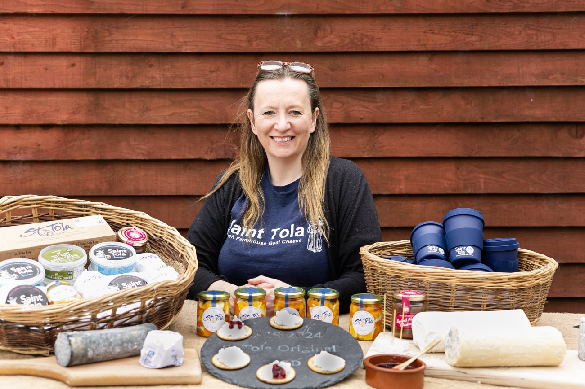
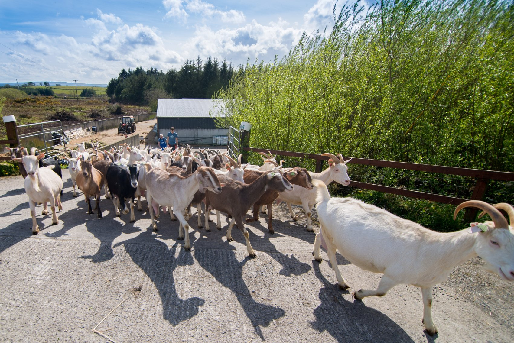

Our Story
A quiet farm. A curious neighbour. Twenty-five years of cheese.


St Tola began as a cottage industry, made on a kitchen table by Meg and Derrick Gordon.
In 1999, their neighbour and friend Siobhán Ní Gháirbhith took over the business. What followed was a careful, deliberate growth, from a handful of cheeses sold at the farm gate to an internationally recognised brand stocked in some of the best delis and restaurants in Ireland, the UK and beyond.
Eight people now work alongside Siobhán in Gortbofearna. The goats still graze the limestone pastures that fringe the Burren. The cheese is still made by hand. The pace is still set by the season.
Siobhán Ní Gháirbhith
Owner & Cheesemaker